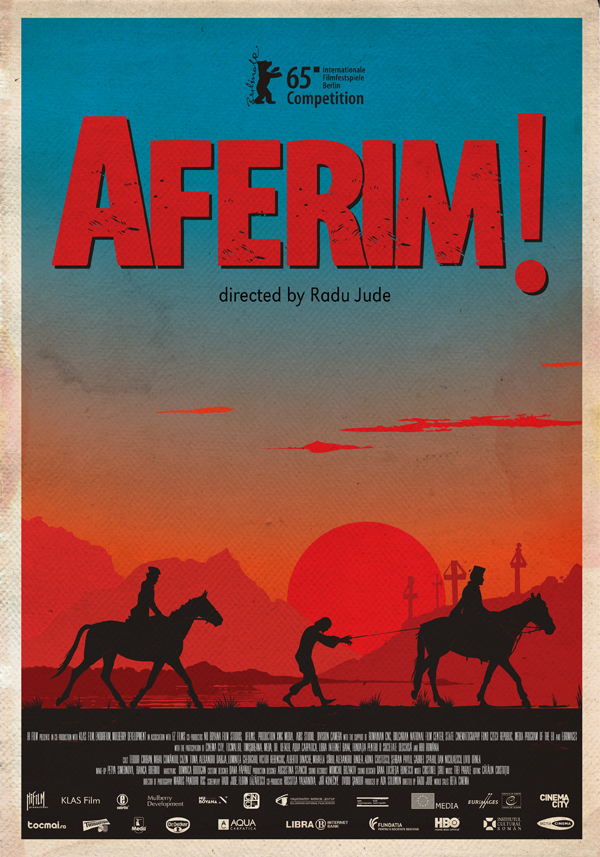

Filme istorice
Mihai Viteazul
8.9
Film istoric în două părți: 1. "Călugăreni"; 2. "Unirea". Filmul evocă principalele momente ale domniei lui Mihai Viteazul:
negocierea tronului cu Sultanul, la Constantinopol; refuzul de a plăti tribut; încoronarea de la Alba Iulia;
bătălia de la Miraslău; trădarea generalului Basta; refugierea la Praga; bătălia de la Goraslau; uciderea lui Mihai.

Mircea
8.2
În 1393 Imperiul Otoman încercă să cucerească toată lumea cunoscută acelor timpuri.
În drumul lor nu a mai rămas decât micul principat al Valahiei, condus de marele domnitor Mircea cel Bătrân.
Ani de zile acesta a luptat atât împotriva turcilor cât și a altor năvălitori, menținând independența țării sale.
Ajuns în amurgul vieții, Mircea nu are de lăsat urmașilor decât o singură moștenire : Libertatea!
Și pentru asigurarea acesteia, el trebuie să treacă de în fruntarea finală cu turcii...

Începutul adevărului
8.1
Filmul încearcă să reconstituie cât mai fidel momentul dramatic al unuia dintre cele mai delicate subiecte din
istoria modernă a României - actul de la 23 august 1944.
Filmul acoperă și perioada tumultoasă a rebeliunii legionare din 1941 și abdicarea regelui Mihai,
ascensiunea, arestarea și executarea mareșalului Antonescu, gloria și decăderea regelui Mihai,
impunerea lui Petru Groza ca prim-ministru de către Vasinski, moartea lui Maniu și execuția lui Pătrășcanu.
Neamul Șoimăreștilor
8.2
Tudor Șoimaru (Mihai Boghiță), un oștean din armata voievodului Tomșa (Ion Besoiu), încearcă, împreună cu alți doi prieteni,
să o salveze pe Magda (Ana Maria Nicolau), fiica boierului Orheianu (Ștefan Ciubotărașu), din mâinile hatmanului de cazaci Vasca,
de care fusese răpită. Tudor se îndrăgostește de Magda, dar fata nu răspunde sentimentelor sale.
Dacii
8.5
Decebal (Amza Pellea) este dispus să facă sacrificiul suprem pentru a păstra integritatea poporului său.
Fiul său, Cotyso (Alexandru Herescu), este dăruit zeilor spre disperarea lui Decebal și a fiicei sale, Meda.
Septimius Severus (Pierre Brice), un tânăr roman devotat țării sale adoptive, va fi pus să aleagă între originile
sale de sânge și cultura în care a fost crescut
Carol I
7.1
Vara anului 1914. La 75 de ani, Regele Carol I, întemeietorul României moderne, trăiește retras în Castelul Peleș.
O are alături pe Regina Elisabeta, soție devotată și prietenă de suflet.
Burebista
8.1
În prima parte a secolului I i.h, Burebista, conducatorul primului stat dac centralizat, lupta pentru unificarea regatului
și redobândirea unor vechi ținuturi dacice. Sprijinit de marele preot Deceneu și de comandanții militari geto-daci, Burebista
duce o politică de alianțe abilă pentru a se apăra atât de expansiunea romană cât și de celți.

Aferim
7.6
Unul dintre cele mai de amploare proiecte cinematografice românești din ultimii ani, Aferim!
Este un un film istoric a cărui acțiune are loc în Țara Românească în 1835.
Zapciul Costandin, însoțit de fiul său, caută un rob fugar.